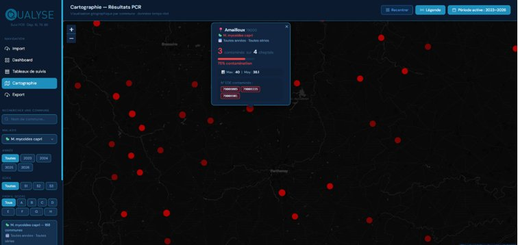
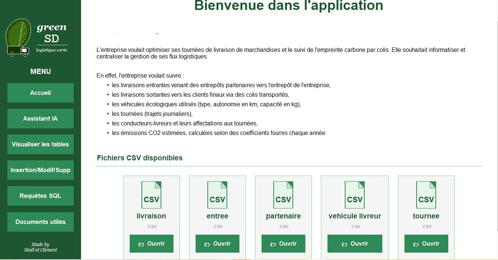
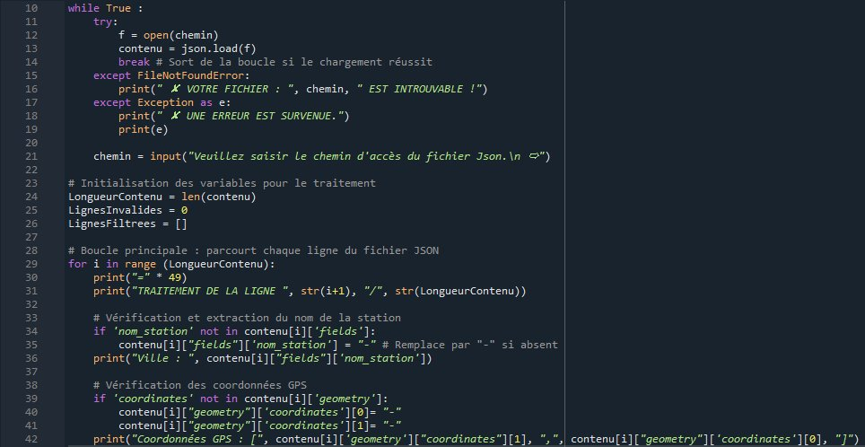
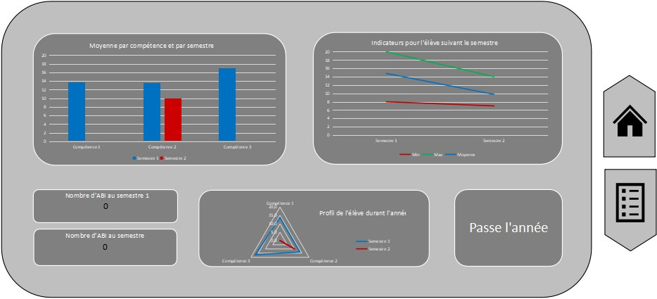
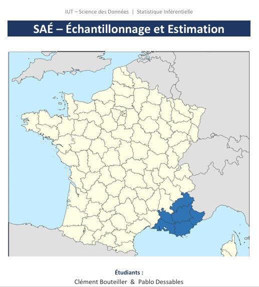

Première année · 2025 - 2026
Projet 01

Dans ce projet réalisé en équipe pour le laboratoire d'analyses sanitaires Qualyse, nous avons conçu un outil dynamique d'analyse et de datavisualisation des résultats de tests PCR sur des élevages des Deux-Sèvres et de la Vienne. À partir des données de dépistage depuis 2018, l'outil classe chaque cheptel selon son statut longitudinal, calcule des indicateurs clés (évolution du nombre de cheptels négatifs, proportion de chaque catégorie par session) et répond à des questions statistiques sur l'effet des sessions de dépistage. Il intègre un tableau de bord interactif et une cartographie des communes affichant en temps réel le taux de contamination, tout en restant capable d'intégrer de nouveaux jeux de données. Le projet a été mené selon la méthode agile SCRUM, avec sprints, backlog produit et suivi Kanban.
Projet 02

Dans ce projet mené en binôme, nous avons développé une application complète pour une entreprise de logistique écologique. Le travail comprenait le nettoyage et l'intégration de données CSV dans une base MySQL, ainsi que la création d'une interface graphique permettant de visualiser les tables, effectuer des insertions et exécuter des requêtes SQL. L'application suit les livraisons, les véhicules écologiques, les tournées des livreurs et les émissions CO2 estimées. Nous avons également intégré un chatbot directement dans l'interface pour guider l'utilisateur et lui expliquer le fonctionnement de l'application.
Projet 03

Dans ce projet réalisé en binôme, nous avons développé un script Python permettant de lire un fichier JSON contenant des données de concentration de polluants dans l'air, de les nettoyer et de les exporter en fichier CSV exploitable sous Excel. Le programme gère les erreurs de fichier introuvable, filtre les lignes incomplètes et reformate les dates. Ce projet nous a permis de manipuler des données réelles et de produire un outil fonctionnel de traitement automatisé.
💾 Télécharger le scriptProjet 04

Dans ce projet, j'ai conçu un outil de gestion de notes sous Excel intégrant un tableau de bord interactif. L'outil permet de saisir les notes par compétence et par semestre, de visualiser les moyennes sous forme de graphiques et d'afficher automatiquement si l'étudiant valide son année. Il inclut des indicateurs de suivi personnalisés ainsi qu'un profil radar représentant l'évolution de l'étudiant sur l'ensemble de l'année.
📊 Télécharger le fichier ExcelProjet 05

Dans ce projet de statistique inférentielle mené en binôme, nous avons estimé la population totale de la région Provence-Alpes-Côte d'Azur à partir d'échantillons de communes, en utilisant le langage R. Nous avons comparé deux méthodes sur 10 tirages répétés : le sondage aléatoire simple et le sondage stratifié par taille de commune. Les résultats montrent que la stratification réduit la marge d'erreur de plus de moitié grâce à la diminution de la variance intra-strate. Une seconde partie portait sur l'analyse d'une enquête sur la pratique sportive des étudiants, avec des tests d'indépendance du khi-deux et le calcul du V de Cramer pour mesurer l'intensité des liaisons entre variables.
📄 Voir le rapportAucun projet trouvé.